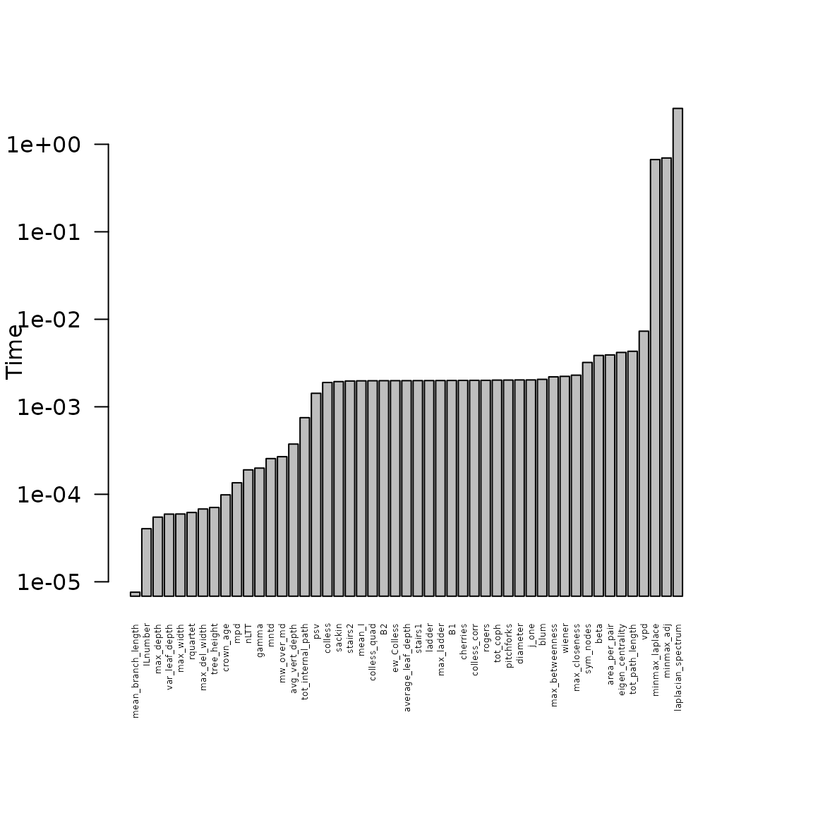

Speed improvement
Thijs Janzen
2024-07-03
Source:vignettes/Speed_improvement.Rmd
Speed_improvement.RmdSpeed
An important goal during the development of treestats, has been to provide not only a vast collection of phylogenetic tree statistics, but also ensure that calculation of these statistics is fast and reliable. During development, results of the developed code have continuously been tested against reference code from other packages. After ensuring correctness, profiling methods have been used to improve calculation speed.
Timing the relationship with tree size
Tree size is an important factor in determining calculation performance. We have varied tree size from 10 to 1000 in logarithmicly appropriate steps, calculating statistics for 10 randomly generated Yule trees per tree size.

Results show that for many statistics, treestats code provides a serious speed improvement over the old R code. Furthermore, scaling with tree size is much better (consider for instance mpd and mntd, which scale exponentially with tree size using R, but linear with using treestats). Two functions are faster in other packages: colless and gamma. These two functions are slower in treestats due to additional checks before performing the calculations, these checks verify whether the tree is binary (for colless) or ultrametric (for the gamma statistic).
Worst culprits
There are three functions that require a considerably larger amount of time to be calculated on a tree of 1000 tips, compared to all other functions (see Figure below). These three functions rely on calculation of the Eigen values of a (Laplacian) matrix. Unfortunately, calculating Eigen values is a costly endeavour, and can not be further optimized in-house - we use the base Eigen functions for that already.
 ### Speed improvement So how much does the speed improve for large trees? We see that for many statistics, the speed improvement is at least a factor 10, with for some statistics (mntd, mpd, psv) a speed improvement around four orders of magnitude. Currently, for many functions speed is limited by preliminary checks if the used tree is ultrametric and/or binary (if required), and code converting a phy object to C++ objects. Nevertheless, improvements are considerable and we hope that these improvements in calculation speed allow for a broader application of many summary statistics.